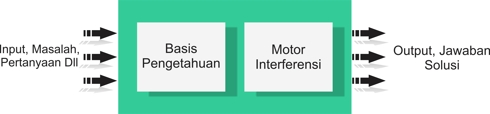

"Kecerdasan Buatan"
- Sistem Kecerdasan Buatan

- Bagian utama yaitu basis pengetahuan dan motor
inferensi.
- Basis pengetahuan (Knowledge Base) : Berisi faktafakta, teori, pemikiran & hubungan antara satu
dengan lainnya.
- Motor inferensi (Inference Engine) : Kemampuan
menarik kesimpulan berdasarkan basis
pengetahuan
- Pada gambar, input yang diberikan pada sistem yang
menggunakan kecerdasan buatan berupa masalah.
- Sistem harus dilengkapi dengan sekumpulan
pengetahuan yang ada pada basis pengetahuan.
- Sistem harus memiliki motor inferensi agar
mampu mengambil kesimpulan berdasarkan fakta
atau pengetahuan.
- Output yang diberikan berupa solusi masalah
sebagai hasil dari inferensi.
- Mendefinisikan Masalah
- Mendefinisikan masalah sebagai pencari ruang stata.
- Untuk membuat deskripsi formal dari permasalahan,
harus dilakukan beberapa hal, diantaranya :
- Definisikan ruang stata yang memuat semua
konfigurasi yang mungkin dari objek yang terkait (dan
mungkin beberapa yg tidak mungkin). Hal ini, tentu
saja mungkin untuk mendefiniskan ruang stata
dengan jumlah stata yang tidak terbatas.
- Tentukan satu atau beberapa stata yang menyatakan
keadaan awal dari masalah, disebut initial states.
- Tentukan satu atau beberapa stata yang dapat
diterima sebagai keadaan akhir (solusi), disebut
goal states.
- Tentukan sejumlah aturan yang menentukan aksi
yang diperkenankan, hal ini mencakup beberapa
hal sebagi berikut :
- Apa asumsi non stata yang ditampilkan dalam
deskripsi masalah non formal? akan menentukan
yang termasuk dan tidak termasuk stata
- Seberapa luas aturan harus dibuat ? dapat
menentukan aturan diberlakukan untuk stata mana
saja.
- Berapa banyak pekerjaan yang diperlukan untuk
menyelesaikan masalah harus disusun dan
dimasukkan ke dalam aturan ? akan menentukan
jumlah baris aturan
- Sistem Produksi
- Sistem produksi terdiri dari 4 bagian:
- Sejumlah aturan, dimana tiap aturan memiliki sisi
kiri yang menyatakan bentuk yang dapat
digunakan dan sisi kanan yang menyatakan hasil
operasi jika aturan diaplikasikan.
- Satu atau lebih pengetahuan/database yang berisi
informasi apapun yang berkaitan dengan tiap
masalah. Beberapa bagian database mungkin
tetap sedangkan yang lain ditambahkan sesuai
dengan masalah yang dihadapi.
- Strategi kendali yang akan menentukan perintah
dalam aturan yang mana yang akan dibandingkan
dengan database dan cara menyelesaikan konflik
yang muncul ketika ada lebih dari satu aturan
yang cocok.
- Penggunaan aturan
- Strategi Kendali
- Syarat suatu strategi kendali yang baik adalah :
- Menggerakkan stata (menjalankan proses)
menuju solusi
- Harus sistematik
- Kedua syarat itu akan melahirkan banyak metode
pencarian
- Contoh Kasus
- Contoh : Masalah Petani, Kambing, serigala dan
Sayuran
- Seorang petani akan menyeberangkan seekor kambing,
seekor serigala dan sayuran dengan sebuah boat yang
melalui sungai.
- Boat hanya bisa memuat petani dan satu penumpang
lain (kambing, serigala atau sayuran).
- Jika ditinggalkan oleh petani tersebut, maka sayuran
akan dimakan oleh kambing dan kambing akan dimakan
oleh serigala.
- Bagaimana caranya agar petani, kambing, serigala dan
sayuran dapat selamat sampai di seberang sungai ?
- Identifikasi ruang keadaan
- Permasalahan ini dapat dilambangkan dengan
(kambing, serigala, sayuran, perahu).
- Contoh : daerah asal (0,1,1,1) = daerah asal tidak ada
kambing,ada serigala,ada sayuran,ada perahu
- Keadaan awal & tujuan
- Keadaan awal, pada kedua daerah :
- daerah asal = (1,1,1,1)
- daerah seberang = (0,0,0,0)
- Keadaan awal, pada kedua daerah :
- 1. daerah asal = (0,0,0,0)
- daerah seberang = (1,1,1,1)


|